Segundo Parcial — Modelado y Simulación
Resolución completa paso a paso
Ejercicio 1a — Población con pesca (logística con cosecha)
$$\dot{x} = r\,x\left(1-\frac{x}{k}\right) - h \qquad\qquad r=0.5,\quad k=100,\quad h=5$$
Paso 1 — Puntos de equilibrio (\(\dot{x}=0\))
Igualo a cero y reordeno como cuadrática:
$$r\,x - \frac{r}{k}\,x^2 - h = 0 \quad\xrightarrow{\ \times(-k/r)\ }\quad x^2 - k\,x + \frac{k\,h}{r} = 0$$
$$x^* = \frac{k \pm \sqrt{\,k^2 - \dfrac{4kh}{r}\,}}{2}$$
Reemplazo \(k=100\), \(\dfrac{kh}{r}=\dfrac{100\cdot 5}{0.5}=1000\):
$$x^2 - 100x + 1000 = 0,\qquad \Delta = 100^2 - 4(1000) = 6000,\qquad \sqrt{6000}=20\sqrt{15}$$
$$x^* = \frac{100 \pm 20\sqrt{15}}{2} = 50 \pm 10\sqrt{15} \;\Rightarrow\; x^*_- = 11.27 \ ,\quad x^*_+ = 88.73$$
Paso 2 — Estabilidad con \(f'(x)\)
$$f'(x) = r - \frac{2r}{k}\,x = \frac{r\,(k-2x)}{k} = 0.5\cdot\frac{100-2x}{100}$$
- \(f'(11.27) = 0.5\cdot\dfrac{100-22.54}{100} = +0.387 > 0 \Rightarrow\) INESTABLE (repulsor)
- \(f'(88.73) = 0.5\cdot\dfrac{100-177.46}{100} = -0.387 < 0 \Rightarrow\) ESTABLE (atractor)
Paso 3 — Bifurcación silla-nodo en \(h = rk/4\)
Los dos equilibrios colapsan cuando el discriminante se anula:
$$\Delta = k^2 - \frac{4kh}{r} = 0 \;\Rightarrow\; h = \frac{rk}{4} = \frac{0.5\cdot 100}{4} = 12.5$$
Ahí: \(x^* = \dfrac{k}{2} = 50\) y \(f'(50)=0\) (no hiperbólico). Transversalidad: \(f''=-\dfrac{2r}{k}\neq0\), \(\dfrac{\partial f}{\partial h}=-1\neq0\) ⟹ silla-nodo genuina.
| Rango de h | Equilibrios | Dinámica |
|---|
| \(h<12.5\) | dos reales | pesca sostenible |
| \(h=12.5\) | uno doble (x=50) | umbral crítico |
| \(h>12.5\) | ninguno real | extinción garantizada |
Paso 4 — Simulación (RK4)
- \(x_0=20 > 11.27 \Rightarrow\) converge a 88.73 (sobrevive)
- \(x_0=10 < 11.27 \Rightarrow \dot{x}<0\), cruza 0 en \(t\approx 5.33\) (extinción)
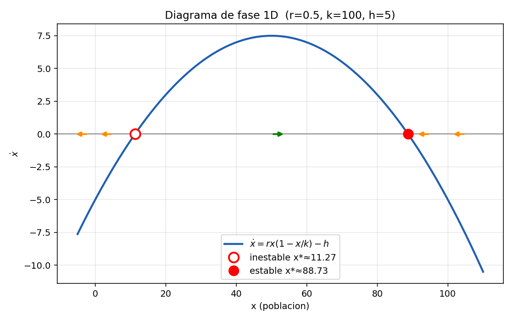
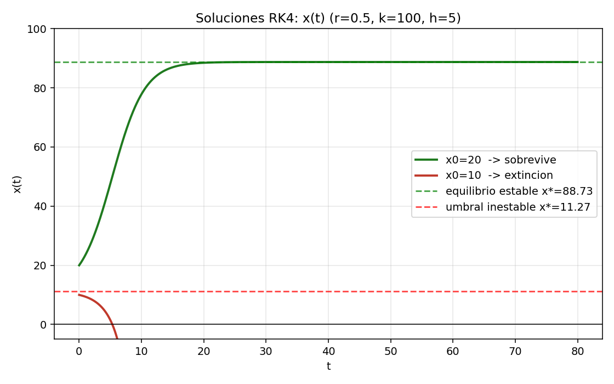
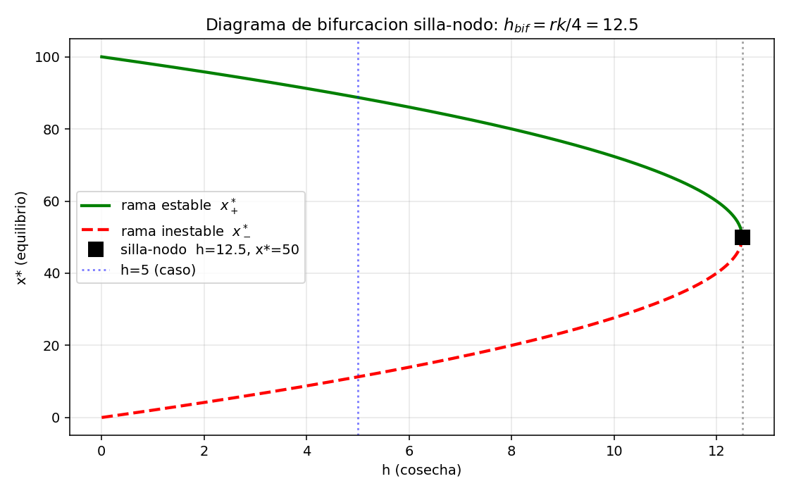
Fase 1D · soluciones x(t) · diagrama de bifurcación (h crítico = 12.5)
Ejercicio 1b — Modelo de Verhulst (demostración)
$$\frac{dp}{dt} = k\,p\,(N-p) \qquad\text{Demostrar que}\qquad P(t)=\frac{N}{1+A\,e^{-Nkt}}$$
Paso 1 — Separar variables
$$\frac{dp}{p\,(N-p)} = k\,dt$$
Paso 2 — Fracciones parciales
$$\frac{1}{p(N-p)} = \frac{A}{p}+\frac{B}{N-p}\;\Rightarrow\; 1 = A(N-p)+B\,p$$
Con \(p=0:\ A=\tfrac{1}{N}\); con \(p=N:\ B=\tfrac{1}{N}\). Entonces:
$$\frac{1}{p(N-p)} = \frac{1}{N}\left(\frac{1}{p}+\frac{1}{N-p}\right)$$
Paso 3 — Integrar
$$\frac{1}{N}\big[\ln|p| - \ln|N-p|\big] = k\,t + C \;\Rightarrow\; \ln\frac{p}{N-p} = N k t + C_1$$
Paso 4 — Despejar p
$$\frac{p}{N-p} = B\,e^{Nkt} \;\Rightarrow\; p\big(1+B e^{Nkt}\big)=N B e^{Nkt}$$
Divido numerador y denominador por \(B e^{Nkt}\) y defino \(A=\tfrac{1}{B}\):
$$P(t) = \frac{N}{1 + A\,e^{-Nkt}} \qquad\blacksquare$$
Paso 5 — Constante por condición inicial
$$P(0)=P_0 \;\Rightarrow\; P_0 = \frac{N}{1+A} \;\Rightarrow\; A = \frac{N-P_0}{P_0}$$
Equilibrios: \(P^*=0\) (fuente, \(f'(0)=Nk>0\)) y \(P^*=N\) (sumidero, \(f'(N)=-Nk<0\)). Inflexión en \(P=N/2\).
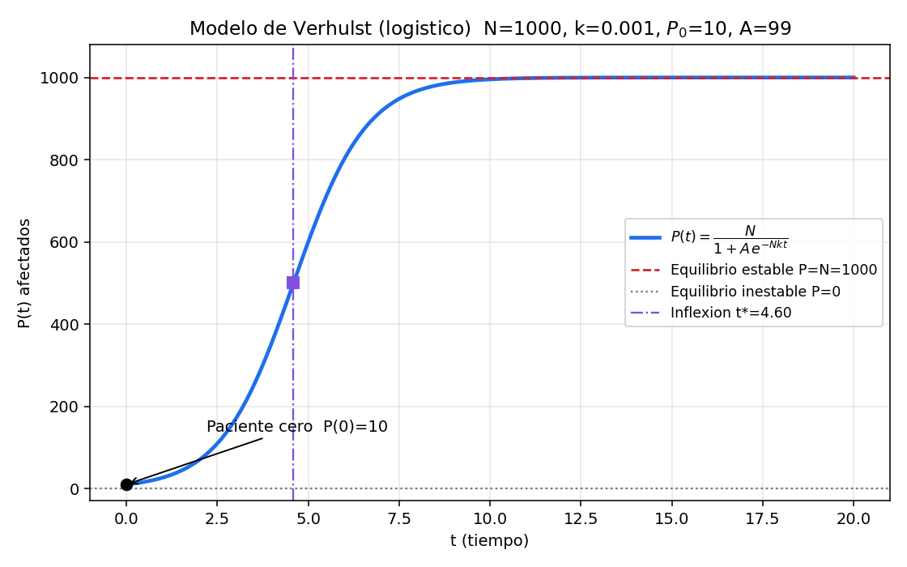
Ejercicio 1c — Enfriamiento de Newton
$$\frac{dT}{dt} = -k\,(T-T_a)\qquad k=0.04\ \text{min}^{-1},\quad T(0)=200^\circ C$$
Paso 1 — Resolver (cambio de variable \(u=T-T_a\))
$$\frac{du}{dt}=-k\,u \;\Rightarrow\; u = u_0\,e^{-kt} \;\Rightarrow\; T(t)=T_a+(T_0-T_a)\,e^{-kt}$$
Paso 2 — Evaluar en t = 30 min
$$kt = 0.04\cdot 30 = 1.2,\qquad e^{-1.2}=0.30119$$
⚠ El valor de \(T_a\) está cortado en el enunciado. Tres lecturas posibles — usá la que corresponda al dato real:
| \(T_a\) | \(T(30)=T_a+(200-T_a)\cdot 0.30119\) |
|---|
| 0 (sin energía residual) | 60.24 °C |
| 20 | 74.21 °C |
| 25 | 77.71 °C |
Equilibrio \(T^*=T_a\) estable (\(\lambda=-k<0\)).
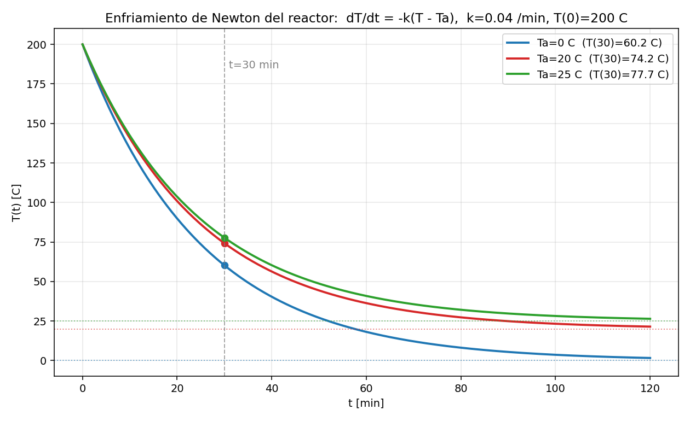
Ejercicio 2a — Competencia conejos (x) – ovejas (y)
$$\dot{x}=x(3-x)-2xy = x(3-x-2y),\qquad \dot{y}=y(2-y)-xy = y(2-y-x)$$
Paso 1 — Equilibrios
\(x=0\) ó \(3-x-2y=0\); y \(y=0\) ó \(2-y-x=0\). Combinando los 4 casos:
| Condición | Equilibrio |
|---|
| \(x=0,\ y=0\) | (0, 0) |
| \(x=0,\ 2-y=0\) | (0, 2) |
| \(3-x=0,\ y=0\) | (3, 0) |
| \(3-x-2y=0\ \wedge\ 2-y-x=0\) | (1, 1) |
Para (1,1): restando las rectas \((3-x-2y)-(2-y-x)=1-y=0\Rightarrow y=1,\ x=1\).
Paso 2 — Jacobiano y clasificación
$$J = \begin{pmatrix} 3-2x-2y & -2x \\ -y & 2-2y-x \end{pmatrix}$$
| Equilibrio | J evaluado | Autovalores | Tipo |
|---|
| (0,0) | \(\begin{pmatrix}3&0\\0&2\end{pmatrix}\) | 3, 2 | nodo inestable |
| (3,0) | \(\begin{pmatrix}-3&-6\\0&-1\end{pmatrix}\) | −3, −1 | nodo estable |
| (0,2) | \(\begin{pmatrix}-1&0\\-2&-2\end{pmatrix}\) | −1, −2 | nodo estable |
| (1,1) | \(\begin{pmatrix}-1&-2\\-1&-1\end{pmatrix}\) | \(-1\pm\sqrt{2}\) = +0.414, −2.414 | silla |
Para (1,1): \(\text{tr}=-2,\ \det=(-1)(-1)-(-2)(-1)=1-2=-1<0\) ⟹ silla. \(\lambda=-1\pm\sqrt{1+1}=-1\pm\sqrt{2}\).
Paso 3 — Condición inicial (3 conejos, 2 ovejas)
Integrando desde (3,2) → converge a (3,0): predominan los CONEJOS (x→3); las ovejas se extinguen (y→0). Exclusión competitiva.
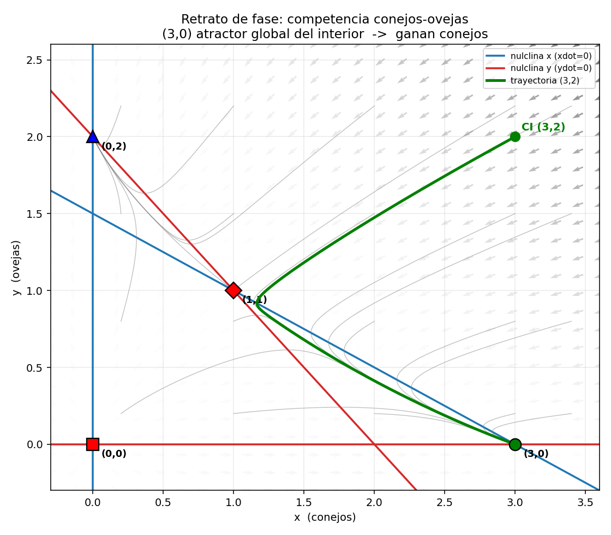
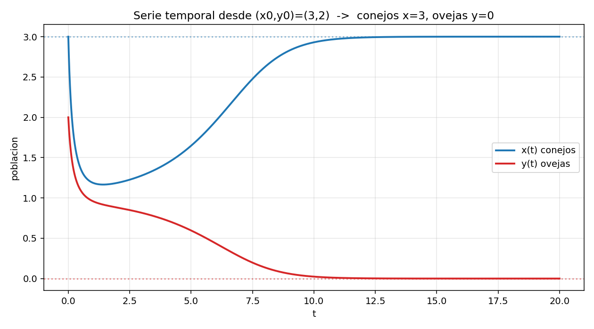
Ejercicio 2b — Romeo y Julieta
$$\dot{x}=3x+2y,\qquad \dot{y}=-2x-2y,\qquad A=\begin{pmatrix}3&2\\-2&-2\end{pmatrix}$$
Paso 1 — Polinomio característico
$$\det(A-\lambda I)=(3-\lambda)(-2-\lambda)-(2)(-2)=\lambda^2-\lambda-6+4=\lambda^2-\lambda-2=0$$
$$(\lambda-2)(\lambda+1)=0 \;\Rightarrow\; \lambda_1=2,\quad \lambda_2=-1$$
\(\text{tr}=1,\ \det=-2<0\) ⟹ SILLA (inestable).
Paso 2 — Autovectores
- \(\lambda=-1:\ (A+I)v=0 \Rightarrow \begin{pmatrix}4&2\\-2&-1\end{pmatrix}v=0 \Rightarrow 4v_1+2v_2=0 \Rightarrow v_1=(1,-2)\)
- \(\lambda=2:\ (A-2I)v=0 \Rightarrow \begin{pmatrix}1&2\\-2&-4\end{pmatrix}v=0 \Rightarrow v_1+2v_2=0 \Rightarrow v_2=(2,-1)\)
Paso 3 — Solución general y CI (1,1)
$$X(t)=c_1\begin{pmatrix}1\\-2\end{pmatrix}e^{-t}+c_2\begin{pmatrix}2\\-1\end{pmatrix}e^{2t}$$
Con \(x_0=1,\ y_0=1\): \(\ c_1+2c_2=1,\ -2c_1-c_2=1 \Rightarrow c_2=1,\ c_1=-1\).
$$x(t)=2e^{2t}-e^{-t},\qquad y(t)=2e^{-t}-e^{2t}$$
Paso 4 — Largo plazo
Domina \(e^{2t}\): \(x\to+\infty,\ y\to-\infty\). El afecto diverge: Romeo se obsesiona, Julieta lo rechaza cada vez más (relación inestable, salvo sobre la recta estable \(v_1\)).
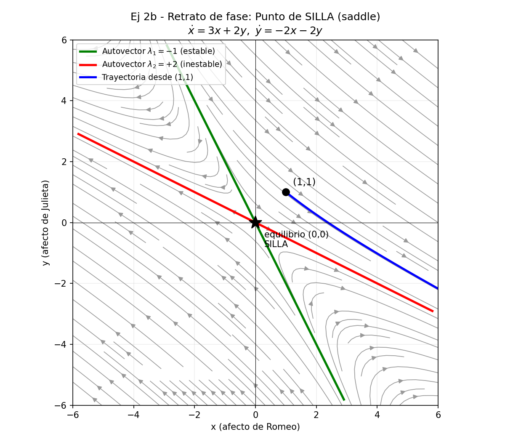
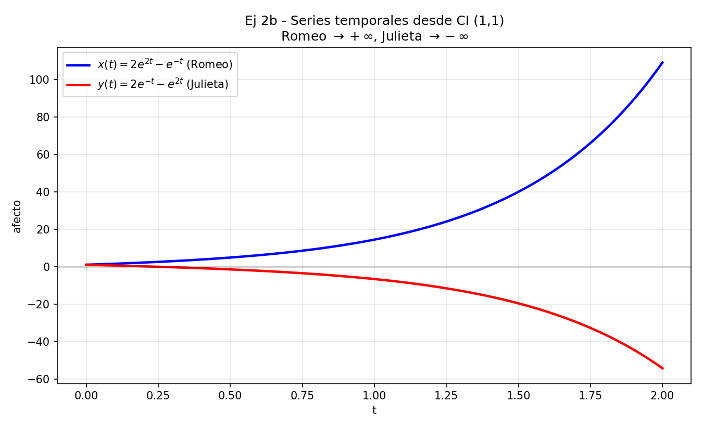
Ejercicio 2c — Lyapunov + coordenadas polares
$$\dot{x}=-y-x(x^2+y^2),\qquad \dot{y}=x-y(x^2+y^2)$$
(i) Función de Lyapunov \(V=\tfrac{1}{2}(x^2+y^2)\)
Con \(r^2=x^2+y^2\):
$$\dot{V}=x\,\dot{x}+y\,\dot{y}=x\big[-y-x\,r^2\big]+y\big[x-y\,r^2\big]$$
$$=-xy-x^2 r^2+xy-y^2 r^2=-(x^2+y^2)\,r^2=-r^4 < 0$$
\(V>0\) definida positiva y \(\dot{V}<0\) ⟹ origen asintóticamente estable (foco que pierde energía).
(ii) Coordenadas polares
Usando \(r\dot{r}=x\dot{x}+y\dot{y}\) y \(r^2\dot{\theta}=x\dot{y}-y\dot{x}\):
$$r\dot{r}=-r^4 \Rightarrow \dot{r}=-r^3,\qquad\qquad x\dot{y}-y\dot{x}=x^2+y^2=r^2 \Rightarrow \dot{\theta}=1$$
Integro \(\dot{r}=-r^3\):
$$\frac{dr}{r^3}=-dt \;\Rightarrow\; -\frac{1}{2r^2}=-t+C \;\Rightarrow\; \frac{1}{2r^2}=t+\frac{1}{2r_0^2}$$
$$r(t)=\frac{r_0}{\sqrt{1+2r_0^2\,t}}\;\xrightarrow{\ t\to\infty\ }\;0$$
Espiral antihoraria (\(\dot{\theta}=1\)) que colapsa al origen.
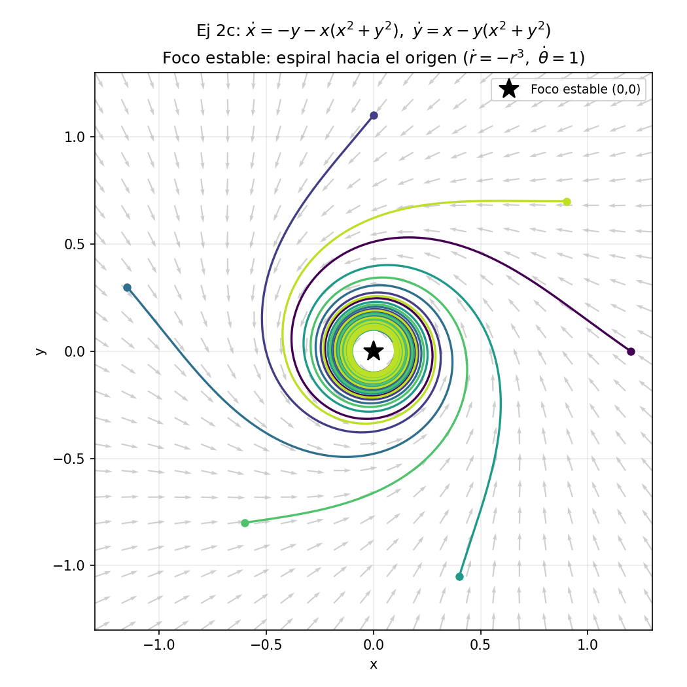
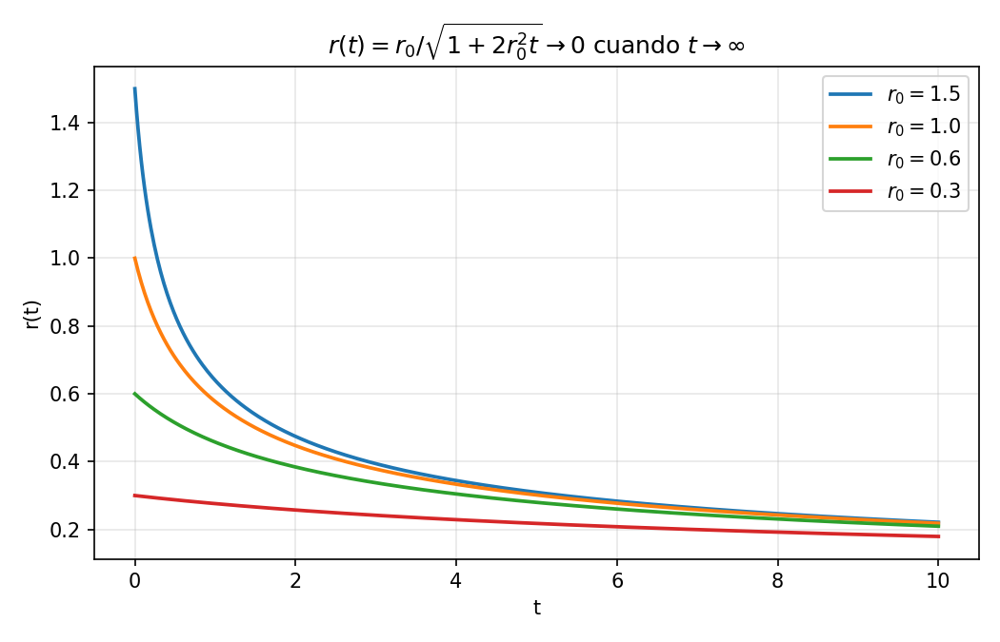
Ejercicio 3 — Péndulo simple sin fricción
$$\dot{x}=y,\qquad \dot{y}=-\sin x$$
(a) Equilibrios y análisis cualitativo
\(\dot{x}=0\Rightarrow y=0\); \(\dot{y}=0\Rightarrow \sin x=0\Rightarrow x=n\pi\). Equilibrios \((n\pi,\,0)\).
$$J=\begin{pmatrix}0&1\\-\cos x&0\end{pmatrix},\qquad \text{tr}=0,\qquad \det=\cos(n\pi)=(-1)^n,\qquad \lambda=\pm\sqrt{-(-1)^n}$$
- n par (0, ±2π, …): \(\det=1,\ \lambda=\pm i\) ⟹ CENTRO (órbitas cerradas = oscilaciones).
- n impar (±π, ±3π, …): \(\det=-1,\ \lambda=\pm 1\) ⟹ SILLA (separatrices).
(b) Conservativo + Hamiltoniano
Divergencia del campo:
$$\nabla\cdot F=\frac{\partial(y)}{\partial x}+\frac{\partial(-\sin x)}{\partial y}=0 \;\Rightarrow\; \text{conservativo}$$
$$H(x,y)=\tfrac{1}{2}y^2+(1-\cos x)$$
Verificación de que \(H\) genera el sistema:
$$\frac{\partial H}{\partial y}=y=\dot{x}\ \checkmark \qquad\qquad -\frac{\partial H}{\partial x}=-\sin x=\dot{y}\ \checkmark$$
Y se conserva sobre las trayectorias:
$$\frac{dH}{dt}=\frac{\partial H}{\partial x}\,\dot{x}+\frac{\partial H}{\partial y}\,\dot{y}=(\sin x)(y)+(y)(-\sin x)=0$$
Separatriz \(H=2\) pasa por las sillas \((\pi,0)\): \(H<2\) oscilaciones, \(H>2\) rotaciones.
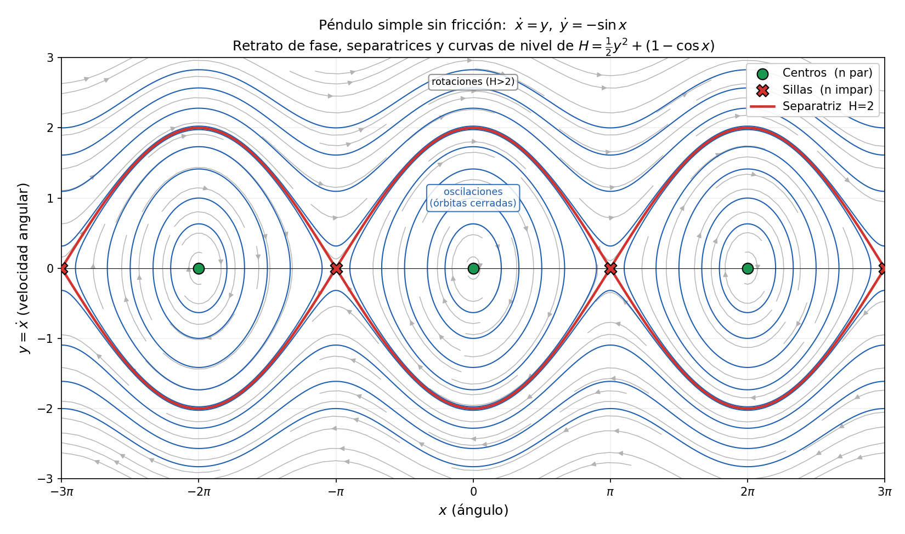
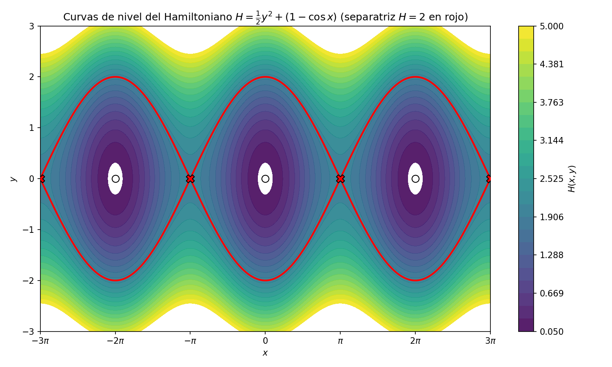
Ejercicio 4 — Bifurcación de Hopf
$$\dot{x}=\mu x-y-x(x^2+y^2),\qquad \dot{y}=x+\mu y-y(x^2+y^2)$$
Paso 1 — Pasar a polares (\(r^2=x^2+y^2\))
$$r\dot{r}=x\dot{x}+y\dot{y}=\mu(x^2+y^2)-r^2(x^2+y^2)=\mu r^2-r^4 \;\Rightarrow\; \dot{r}=\mu r-r^3$$
$$r^2\dot{\theta}=x\dot{y}-y\dot{x}=x^2+y^2=r^2 \;\Rightarrow\; \dot{\theta}=1$$
Paso 2 — Equilibrio en el origen
$$J(0,0)=\begin{pmatrix}\mu&-1\\1&\mu\end{pmatrix},\qquad \lambda=\mu\pm i$$
- \(\mu<0:\ \text{Re}(\lambda)<0\) ⟹ foco estable (sin ciclo).
- \(\mu=0:\ \lambda=\pm i,\ \text{Re}=0\) ⟹ bifurcación de Hopf. Transversalidad \(\tfrac{d}{d\mu}\text{Re}(\lambda)=1>0\) ⟹ supercrítica.
- \(\mu>0:\) foco inestable.
Paso 3 — Ciclo límite (a)
$$\dot{r}=r(\mu-r^2)=0 \;\Rightarrow\; r=0 \ \text{ó}\ r^*=\sqrt{\mu}\ \ (\text{solo si }\mu>0)$$
Estabilidad radial: \(\dfrac{d\dot{r}}{dr}=\mu-3r^2\). En \(r^*\): \(\mu-3\mu=-2\mu<0\) ⟹ ciclo límite estable.
Para \(\mu=0.5\): ciclo límite estable de radio \(r^*=\sqrt{0.5}=0.707\).
Paso 4 — Estructura orbital (b)
\(\dot{\theta}=1\) → rotación uniforme antihoraria. Toda trayectoria (salvo el origen) espiralea hacia la circunferencia \(r=\sqrt{\mu}\). Para \(\mu\le 0\): todo colapsa al origen.
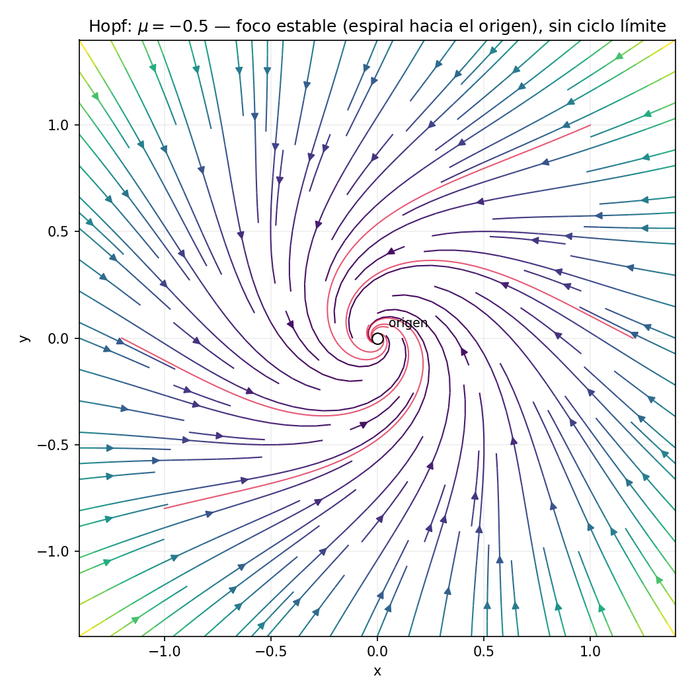
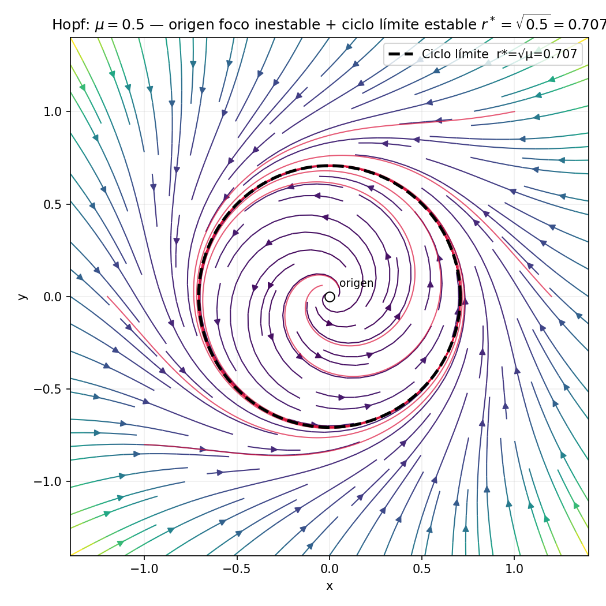
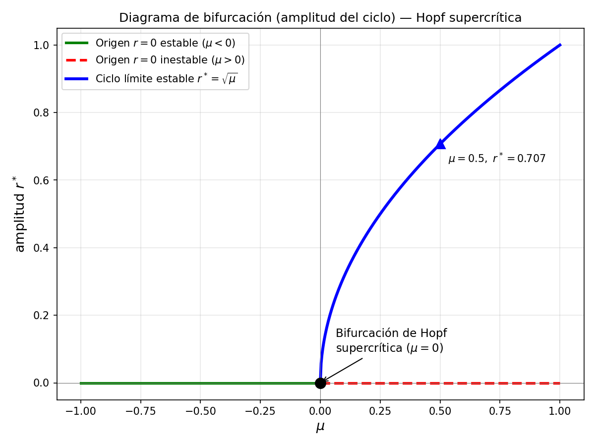
Modelado y Simulación — Segundo parcial · Resolución verificada con sympy/numpy